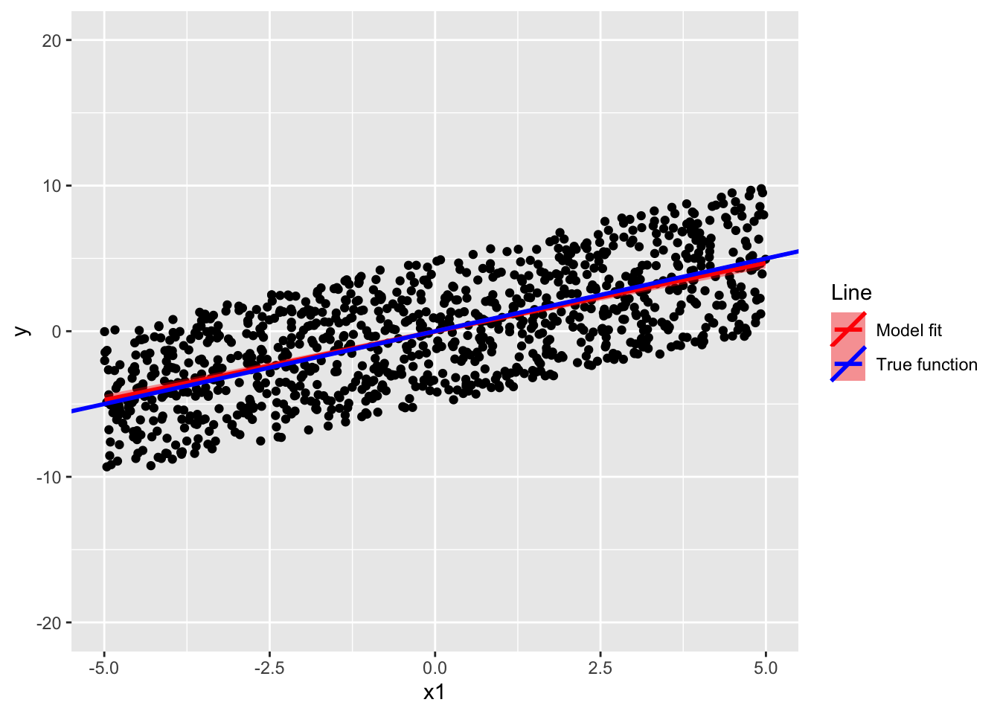

Model comparison vs. significant effects
Joe Sweetman
Here I discuss the difference between model comparison (how well models fit/predicts the data) and significant parameters or “effects” in your model. As the analysis of our in-class experiment showed, it is possible for a model to have significant “effects” but (relatively) poor fit. It’s also possible for your model to have (relatively) good fit but no significant parameters/effects. This might seem like crazy talk but it is nonetheless true. Below we will simulate some data and try and develop our understanding of what it means to have a significant effect and what it means for your model to fit the data. We will show how the intuition that a model with significant effects will necessarily fit the data better than a model with no significant effects is not necessarily true. The focus on model comparison (i.e., fit of different models to the data) or significant effects (whether model parameters/slopes are different from 0) reflects a differences in whether researcher are interested in null hypothesis significance testing (i.e., knowing whether a slope is significantly different from 0) or whether they are interested in comparing different plausible models of the data generating process (i.e., how well the model predits the current and future data).
If you want to run the code and have a play around with this yourself you’ll need to installed R and RStudio.
1 packages
First, we will need to install and/or load the packages that we need into RStudio. To run the code just make sure your cursor is on the right line and click select “Run”. This will run the current lines of code.
# Package names
packages <- c("ggplot2", "tidyverse", "performance", "broom")
# Install packages not yet installed
installed_packages <- packages %in% rownames(installed.packages())
if (any(installed_packages == FALSE)) {
install.packages(packages[!installed_packages])
}
# Packages loading
library(ggplot2)
library(tidyverse)
library(performance)
library(broom)2 Finding out what’s the best theory is?
The practical is trying to answer the question
Is the moral mind/brain best described by moral grammar or dual process models?”
To do this we could follow business as usual and fit statistical models and see if their parameters/fixed effects are significant. Maybe we could count the number of significant effects and say that the model with the most significant effect is the best. But this would advantage models with a large amount of small effects vs. a model with one overall larger effect. Indeed, R^2 as a measure of variance “explained” (really predicted) suffers from the problem that adding more predictors/IVs just keeps on increasing R^2! In science we want parsimony - as simple an explanation as possible, that still accounts for the relevant data. Fortunately, there are a number of better ways of determining which model better fits (or predicts) the data such as AIC, BIC, or using Bayes Factors in model comparison. First, let’s get our head around the difference between significant effects and model fit.
3 Model fit vs. signifcant effects
Let’s look at two models that can help us understand the difference between model fit (prediction of data) and significant effects.
3.1 simulate some data and stick it in a dataframe
Simulation is an important tool for understanding statistics. Here we will simulate some data for two independent variables x1 and x2 (values ranging between -5 and 5) and a dependent variable y (with a mean or intercept of 0), along with an error term e. Notice that because we created the data we know that the correct regression coefficients for predicting y from x1 and x2 are 1 (we defined y = 0 + 1x1 + 1x2 + e). In other words, we know the “ground truth”. This is not the case in the real world (unfortunately) but knowing the truth in our simulations allows us to explore aspects of our models with full understanding of what’s going on. We will put this all into a dataframe for analysis df.
# we set a seed to make sure this example is exactly reproducible
set.seed(123)
# we generate some data for the varibale x1 and x2 from a uniform distribution
x1 = runif(1000, min=-5, max=5)
x2 = runif(1000, min=-5, max=5) # between -5 and 5
# we generate some errors from a normal distribution
e = rnorm(1000, mean=0, sd=0.05)
# since we are making up the example can set the ground truth for the true intercept and slopes as 0
y = 0 + 1*x1 + 1*x2 + e
# make a dataframe
df <- data.frame(x1, x2, y, e)3.2 fit the first model (m1)
Now let’s fit a simple linear model (m1) to the data and have a look at the model summary.
# fit the linear model
m1 <- lm(y~x1+x2,data = df)
# look at the model summary
summary(m1)##
## Call:
## lm(formula = y ~ x1 + x2, data = df)
##
## Residuals:
## Min 1Q Median 3Q Max
## -0.15355 -0.03470 0.00051 0.03488 0.16687
##
## Coefficients:
## Estimate Std. Error t value Pr(>|t|)
## (Intercept) 0.0021278 0.0015980 1.332 0.183
## x1 1.0002100 0.0005571 1795.445 <2e-16 ***
## x2 0.9999318 0.0005605 1783.844 <2e-16 ***
## ---
## Signif. codes: 0 '***' 0.001 '**' 0.01 '*' 0.05 '.' 0.1 ' ' 1
##
## Residual standard error: 0.05053 on 997 degrees of freedom
## Multiple R-squared: 0.9998, Adjusted R-squared: 0.9998
## F-statistic: 3.024e+06 on 2 and 997 DF, p-value: < 2.2e-16Happy times, we can see that both of our predictors are significant and the coefficient (slope) estimates are pretty close to the truth (i.e., 1)! We can also see that R2 is very high (R2 is not a good measure of fit as we will see later). Let’s do something crazy and actually look at the data rather than just the p-values! We can plot the regression line for the model (red) against the data and the ground truth (blue).
# we can plot the the ground truth (blue) and model fit (red)
ggplot(df, aes(x = x1, y = y)) +
geom_point() +
stat_smooth(aes(col = "Model fit"),method = lm,fill = "red")+
geom_abline(aes(slope = 1, intercept = 0, col = "True function"),size =1)+
scale_color_manual(name = "Line",values = c("red", "blue")) +
ylim(-20, 20)## Warning: Using `size` aesthetic for lines was deprecated in ggplot2 3.4.0.
## ℹ Please use `linewidth` instead.
## This warning is displayed once every 8 hours.
## Call `lifecycle::last_lifecycle_warnings()` to see where this warning was
## generated.## `geom_smooth()` using formula = 'y ~ x'
You can see the model’s is pretty close to the ground truth (i.e., the
true function that generated the data!). We can see that the slope of
the regression line is around 1. That is, an increase of 1 unit in x1 is
associated with a 1 unit increases in y. We know from the model summary
that this slope is significantly different from 0 - our rejected null
hypothesis.
3.3 increase the spread (noise) of the error in y
Let’s introduce a greater amount of noise in y as reflected by a wider SD in our error term. Simulate the new values and stick it in a dataframe.
# we set a seed to make sure this example is exactly reproducible
set.seed(123)
# we generate some errors from a normal distribution
e2 = rnorm(1000, mean=0, sd=5)
# since we are making up the example can set the ground truth for the true intercept and slopes as 0
y2 = 0 + 1*x1 + 1*x2 + e2
# make a dataframe
df2 <- data.frame(x1, x2, y2, e2)3.4 fit the second model (m2)
Now let’s fit a second linear model (m2) with the same predictors (x1 and x2) to the noisier data and have a look at the model summary.
# fit the linear model
m2 <- lm(y2~x1+x2, data = df2)
# look at the model summary
summary(m2)##
## Call:
## lm(formula = y2 ~ x1 + x2, data = df2)
##
## Residuals:
## Min 1Q Median 3Q Max
## -14.3371 -3.2445 0.0095 3.2570 16.2479
##
## Coefficients:
## Estimate Std. Error t value Pr(>|t|)
## (Intercept) 0.08036 0.15671 0.513 0.608
## x1 0.94114 0.05463 17.227 <2e-16 ***
## x2 1.07614 0.05497 19.576 <2e-16 ***
## ---
## Signif. codes: 0 '***' 0.001 '**' 0.01 '*' 0.05 '.' 0.1 ' ' 1
##
## Residual standard error: 4.955 on 997 degrees of freedom
## Multiple R-squared: 0.3918, Adjusted R-squared: 0.3906
## F-statistic: 321.1 on 2 and 997 DF, p-value: < 2.2e-16You can see that we approximately reproduce the results from the first model. Both our predictors are significant and the coefficient (slope) estimates are pretty close to the true value of 1. You can see however that R2 in this model (albeit a poor measure of model fit as we will see later) is much lower. Let’s look at the data.
# we can plot the the ground truth (blue) and model fit (red)
ggplot(df2, aes(x = x1, y = y2)) +
geom_point() +
stat_smooth(aes(col = "Model fit"),method = lm,fill = "red")+
geom_abline(aes(slope = 1, intercept = 0, col = "True function"),size =1)+
scale_color_manual(name = "Line",values = c("red", "blue"))## `geom_smooth()` using formula = 'y ~ x'This is almost identical to the first model. The model regression line is again pretty close to the ground truth of 1. What is different though is the spread of the data. We can see that unlike our first model (m1) the data here are widely spread along either side of the regression line.
3.5 model fit
So we have two models m1 and m2 that give significant effects for our two IVs x1 and x2. That is, the slopes in both models are almost identical and are both significantly different from 0. But what about model fit? How well do each of the model’s fit (i.e., predict) the data?
3.5.1 model fit indices (AIC and BIC)
We can look at some model fit indices for each of the models to see which one fits (i.e., predicts) our data the best. As revealed in the model summary we see that R2 is better for our first model (m1) than our second. But we want to focus on the AIC and BIC as they are better indices of model fit than R2 (we will see how bad R2 is as a measure of fit shortly). Both AIC and BIC are lower for our first model then our second, indicating better fit.
compare_performance(m1,m2)## When comparing models, please note that probably not all models were fit
## from same data.## # Comparison of Model Performance Indices
##
## Name | Model | AIC (weights) | AICc (weights) | BIC (weights) | R2 | R2 (adj.) | RMSE | Sigma
## ------------------------------------------------------------------------------------------------------
## m1 | lm | -3127.5 (>.999) | -3127.5 (>.999) | -3107.9 (>.999) | 1.000 | 1.000 | 0.050 | 0.051
## m2 | lm | 6043.8 (<.001) | 6043.8 (<.001) | 6063.4 (<.001) | 0.392 | 0.391 | 4.948 | 4.955Why is this? To see why, we can plot the the residual distance from the regression line for our first model (m1) and for our second model (m2).
# we can plot the the residual distance from the regression line
df$fitted <- m1$coefficients[1] + m1$coefficients[2] * df$x1
ggplot(df, aes(x1, y)) +
geom_point() +
stat_smooth(aes(col = "Model fit"),method = lm,fill = "red")+
geom_abline(aes(slope = 1, intercept = 0, col = "True function"),size =1)+
geom_segment(aes(xend = x1, yend = fitted),alpha = 0.4) +
scale_color_manual(name = "Line",values = c("red", "blue"))+
ylim(-20, 20)## `geom_smooth()` using formula = 'y ~ x'# we can plot the the residual distance from the regression line
df2$fitted <- m2$coefficients[1] + m2$coefficients[2] * df2$x1
ggplot(df2, aes(x1, y2)) +
geom_point() +
stat_smooth(aes(col = "Model fit"),method = lm,fill = "red")+
geom_abline(aes(slope = 1, intercept = 0, col = "True function"),size =1)+
geom_segment(aes(xend = x1, yend = fitted),alpha = 0.4) +
scale_color_manual(name = "Line",values = c("red", "blue"))+
ylim(-20, 20)## `geom_smooth()` using formula = 'y ~ x'You can see that the residuals, or the distance between each data point and the regression line (i.e., the grey/black lines), are much greater for our second model (m2). The mean of the square of these residuals or the mean squared error (MSE) forms part of something called the likelihood which can thought of as the likelihood of observing the data given the model.
resm1<-m1$residuals
nm1<-nrow(m1$model)
resm2<-m2$residuals
nm2<-nrow(m2$model)
llm1<- 0.5 * (nm1 * (log(2 * pi) +1 - log(nm1) + log(sum(resm1^2))))
llm2<- 0.5 * (nm2 * (log(2 * pi) +1 - log(nm2) + log(sum(resm2^2))))
print(sprintf("model 1, log likelihood = %s", llm1))## [1] "model 1, log likelihood = -1567.74801360134"print(sprintf("model 2, log likelihood = %s", llm2))## [1] "model 2, log likelihood = 3017.90051131984"The AIC and BIC are based on the log likelihood (ll), correcting or penalising to different degrees for the number of parameters (k) included in the model.
km1<-length(m1$coefficients)
km2<-length(m2$coefficients)
df.llm1<-km1+1
df.llm2<-km2+1
bicm1<- -2 * llm1 + log(nm1) * df.llm1
aicm1<- -2 * llm1 + 2 * df.llm1
bicm2<- -2 * llm2 + log(nm2) * df.llm2
aicm2<- -2 * llm2 + 2 * df.llm2
AICm1<-round(aicm1, digits = 1)
BICm1<-round(bicm1, digits = 1)
AICm2<-round(aicm2, digits = 1)
BICm2<-round(bicm2, digits = 1)
print(sprintf("model 1, AIC = %s; BIC = %s", AICm1, BICm1))## [1] "model 1, AIC = 3143.5; BIC = 3163.1"print(sprintf("model 2, AIC = %s; BIC = %s", AICm2, BICm2))## [1] "model 2, AIC = -6027.8; BIC = -6008.2"So we can see how the residuals go into our indices of model fit. Even though the models have equivalent significant effects one of the models (m1) is a better fit of the data.
4 model with no significant “effects” but good fit
We can look at other scenarios comparing model fit and significance.
Let’s look at a model with no significant effects/parameters but good
fit.
4.1 simulate some data and stick it in a dataframe
Here we will simulate some data for independent variables x3 and x4 and a dependent variable y3, along with an error term. We will put this all into a dataframe. Again, because we created the data we know what the correct regression coefficients are for predicting y3. In other words, we know the “ground truth”.
# we set a seed to make sure this example is exactly reproducible
set.seed(123)
# we generate some data for the varibale x1 and x2 from a uniform distribution
x3 = runif(100, min=-5, max=5)
x4 = runif(100, min=-5, max=5) # between -5 and 5
# we generate some errors from a normal distribution
e3 = rnorm(100, mean=0, sd=1)
# since we are making up the example can set the ground truth for the true intercept and slopes as 0
y3 = 0 + 0*x3 + 0*x4 + e3
# make a dataframe
df3 <- data.frame(x3, x4, y3, e3)4.2 fit the model
Now let’s fit a simple linear model to the data and have a look at the model summary.
# fit the linear model
m3 <- lm(y3~x3+x4)
# look at the model summary
summary(m3)##
## Call:
## lm(formula = y3 ~ x3 + x4)
##
## Residuals:
## Min 1Q Median 3Q Max
## -1.8994 -0.6821 -0.1086 0.5749 3.3663
##
## Coefficients:
## Estimate Std. Error t value Pr(>|t|)
## (Intercept) -0.106985 0.097788 -1.094 0.277
## x3 0.009726 0.034567 0.281 0.779
## x4 -0.002964 0.037347 -0.079 0.937
##
## Residual standard error: 0.9765 on 97 degrees of freedom
## Multiple R-squared: 0.0009275, Adjusted R-squared: -0.01967
## F-statistic: 0.04503 on 2 and 97 DF, p-value: 0.956Sad times, none of our parameters are significant. But let’s do something crazy and actually look at the data. We can plot the regression line for the model (red) against the data and the ground truth (blue).
# we can plot the the ground truth (black) and model fit (red)
ggplot(df3, aes(x = x3, y = y3)) +
geom_point() +
stat_smooth(aes(col = "Model fit"),method = lm,fill = "red")+
geom_abline(aes(slope = 0, intercept = 0, col = "True function"),size =1)+
scale_color_manual(name = "Line",values = c("red", "blue"))+
ylim(-5, 5)## `geom_smooth()` using formula = 'y ~ x' You can see that despite the non-significant parameters/effects the
model is pretty close to the ground truth (i.e., true function that
generated the data!) Overall, it looks like the fit is not too bad with
the data points not too far from the model regression line.
You can see that despite the non-significant parameters/effects the
model is pretty close to the ground truth (i.e., true function that
generated the data!) Overall, it looks like the fit is not too bad with
the data points not too far from the model regression line.
5 model with significant “effects” but poor fit
But surely if we have some significant parameters/effects then the model will fit the data better, right? Yeah, that’s absolutely wrong! Let’s look.
5.1 create a new ground truth and stick it in a dataframe
Here we will update our ground truth with a curvilinear relationship and put that in a new dataframe.
# since we are making up the example we can set the ground truth for the true intercept and slopes, this time they are not 0 they show curvilinear relationship
y4 = 4.96 + 0.65*x3 + -0.16*x3^2 + 0.62*x4 + -0.19*x4^2 + e3
# make a dataframe
df4 <- data.frame(x3, x4, y4, e3)5.2 fit the model
Now let’s fit the same predictors again and have a look at the model summary.
# fit the linear model
m4 <- lm(y4~x3+x4)
# look at the model summary
summary(m4)##
## Call:
## lm(formula = y4 ~ x3 + x4)
##
## Residuals:
## Min 1Q Median 3Q Max
## -4.6886 -1.4149 0.1573 1.4060 4.4776
##
## Coefficients:
## Estimate Std. Error t value Pr(>|t|)
## (Intercept) 2.28503 0.19372 11.795 < 2e-16 ***
## x3 0.63071 0.06848 9.210 6.80e-15 ***
## x4 0.39479 0.07399 5.336 6.23e-07 ***
## ---
## Signif. codes: 0 '***' 0.001 '**' 0.01 '*' 0.05 '.' 0.1 ' ' 1
##
## Residual standard error: 1.934 on 97 degrees of freedom
## Multiple R-squared: 0.5211, Adjusted R-squared: 0.5112
## F-statistic: 52.77 on 2 and 97 DF, p-value: 3.116e-16Happy days, our parameters are significant! But let’s look at the data.
# we can plot the the ground truth (blue) and model fit (red)
ggplot(df4, aes(x = x3, y = y4)) +
geom_point() +
stat_smooth(aes(col = "Model fit"),method = lm,fill = "red")+
stat_smooth(aes(col = "True function"),method = "lm", formula=y ~ poly(x,2))+
scale_color_manual(name = "Line",values = c("red", "blue"))## `geom_smooth()` using formula = 'y ~ x'Oh no, there a lot of gap between the model and the true function that generated the data (i.e., ground truth)! And you can see a large distance between the model regression line and the data points. We can compare the model fit for our two models using information criterion (AIC and BIC).
6 information criterion (AIC and BIC)
Let’s look at the more traditional information criterion indices.
# we can compare the AIC and BIC for model fit
compare_performance(m3,m4)## When comparing models, please note that probably not all models were fit
## from same data.## # Comparison of Model Performance Indices
##
## Name | Model | AIC (weights) | AICc (weights) | BIC (weights) | R2 | R2 (adj.) | RMSE | Sigma
## -----------------------------------------------------------------------------------------------------
## m3 | lm | 284.0 (>.999) | 284.4 (>.999) | 294.4 (>.999) | 9.275e-04 | -0.020 | 0.962 | 0.976
## m4 | lm | 420.7 (<.001) | 421.1 (<.001) | 431.1 (<.001) | 0.521 | 0.511 | 1.905 | 1.934Here we see that the model that had non-significant parameters/effects (m3) has relatively better fit than the model that had significant parameters/effects (m4). That is, both m3’s AIC 286.4 (vs. 448) and BIC 296.8 (vs. 458.4) are lower than those of m4. Again, this shows how model fit and the significance of parameters/effects are not necessarily related.
When you see a significant parameter/effect it is just telling you that the slope is significantly different from zero, it’s not telling you how good the model fits (predicts) the actual data and the underlying data generation process. If you have a look at R2 you will see it’s favouring m4 which is why we shouldn’t pay it much attention as a measure of model fit! This is one of the many occasion when R2 makes no sense as a measure of model fit [for details, see this] (https://www.stat.cmu.edu/~cshalizi/mreg/15/lectures/10/lecture-10.pdf). We can see in the plot that prediction will be better in m3 than in m4 because the m4 is trying to predict a curvlinear relationship with a linear regression line!